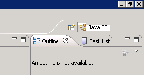
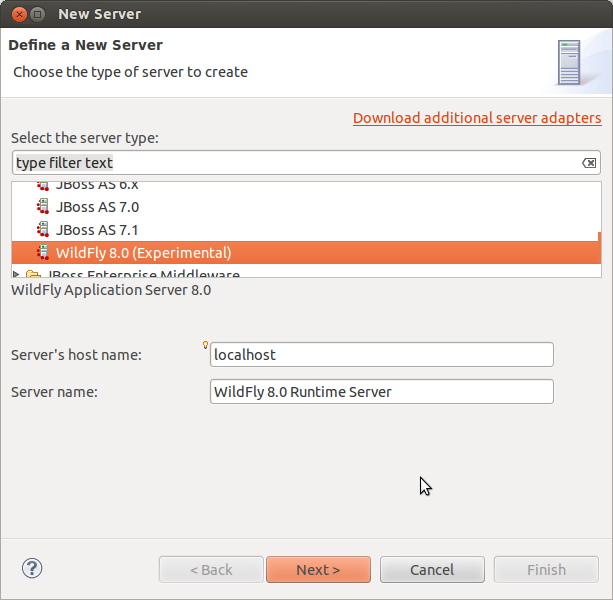
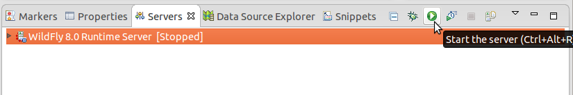

Contents
- Installing the latest JDK
- Installing JBoss AS 7
- Installing Eclipse 4.2
- Installing JBoss Tools 4.0
Installing the latest JDK
- Make sure that the latest version of the Java Development Kit (JDK 7 Update 03 or later) is installed on your computer. If the JDK is properly installed on your computer, you can jump to step 4 of this section, otherwise continue with the next step.
- Go to http://www.oracle.com/technetwork/java/javase/downloads/index.html and follow the instructions on Oracle's website to download the latest version of the JDK (Java SE 7 Update 03 or later) for the operating system of your computer.
- Install the JDK to a directory on your computer, e.g. C:\Java\jdk7_03.
- Create an environment variable called JAVA_HOME that points to the JDK installation directory, for example C:\Java\jdk7_03.
Installing JBoss AS 7
- Get the latest stable version of the JBoss Application Server (7.1.1.Final) from http://www.jboss.org/jbossas/downloads/ (jboss-as-distribution-7.7.1.Final.zip).
- Extract the zip archive to a directory on your computer, e.g. C:\EAI. The path must not contain any spaces. A new directory, e.g. C:\EAI\jboss-7.1.1.Final, containing the JBoss AS files will be created.
- Use the script <JBoss directory>\bin\standalone.bat to start the JBoss server and check the installation. After startup, you should be able to access the web server at http://localhost:8080.
- Open the link Administration Console and follow the instructions to add a new management user.
- After creating a user revisit the Administration Console.
- Go to Deployments --> Manage Deployments and click Add Content to upload hsqldb.jar. Make sure that the deployed file is enabled.
- Go to Connector -> Datasources and click Add. Use the following information to create a datasource:
- Name: DefaultDS
- JNDI Name: java:/DefaultDS
- Choose hsqldb.jar as driver
- Connection URL: jdbc:hsqldb:${jboss.server.data.dir}${/}hypersonic${/}localDB;shutdown=true
- username: sa
- In order to stop the server, press CTRL-C in the console window that was opened during step 3.
Installing Eclipse 4.2.2
- Download the Eclipse IDE for Java EE Developers for your operating system (version 4.2.2, Juno SR2) from http://www.eclipse.org/downloads/packages/eclipse-ide-java-ee-developers/junosr2.
- Extract the downloaded archive, e.g. eclipse-jee-juno-SR2-win32-x86_64.zip, to a directory on your computer, e.g. C:\EAI. This will create a sub directory, like C:\EAI\eclipse.
- Start Eclipse. The eclipse.exe is located in the installation directory. Wait for the "Workspace Launcher" window to pop up and select a workspace directory, for example C:\EAI\projects. This path must not contain any spaces either. The workspace directory is where all your projects will be stored. You may check the "Use this as the default and do not ask again" box to avoid this dialog from appearing on the next start. Click "OK" to close the dialog and get to the workbench window.
Installing JBoss Tools 4.0 for Eclipse
- Select "Help->Eclipse Marketplace..." from the Eclipse menu bar. Choose "Eclipse Marketplace" if prompted for a marketplace catalog.
- Search for "JBoss Tools" and install JBoss Tools (Juno), version 4.0.x.
- Wait until "Calculating requirements..." has finished and make sure that all features are checked, then click "Next".
- Accept the license agreements and click "Finish".
- When the download is complete, a security warning regarding "Unsigned content" will appear. Accept with "OK" to begin with the installation.
- When prompted to do so, "Restart Now".
- After closing the "Welcome" window you will see the "Java EE" perspective. The selected perspective is indicated in the upper right corner as shown in the following figure:

If the Java EE button is not visible you can change to the Java EE perspective via "Window->Open Perspective->Other..." . In the "Open Perspective" dialog double click the Java EE entry.
- Activate the "Servers" view tab in the lower right of the window. Right-click the empty area and select "New->Server" as shown in this screenshot:

- In the "New Server" window select "JBoss AS 7.1" (from the JBoss Community category) as server type and click "Next".

Set the "Home Directory" entry to the installation directory of the JBoss AS, e.g. C:\EAI\jboss-7.1.1.Final, and click "Finish".
- In the "Servers" view select the newly created server and click the green start button.

A new "Console" view will open showing the startup logs of the JBoss AS.
Congratulations, you have successfully installed JBoss AS and JBoss Tools!
Continue with the setup of your first Java EE project.
Please send questions and comments regarding this tutorial to Claus Alexander Usener.
How To Set Environment Variables
- Windows XP: Open the Control Panel (Systemsteuerung) from the Start Menu, switch to Classic View (Klassische Ansicht) if necessary, open the System Control Panel applet (System), select the Advanced tab (Erweitert), and click on the Environment Variables button (Umgebungsvariablen).
- Windows 7: Control Panel (Systemsteuerung) - System - choose Advanced System Settings (Erweiterte Systemeinstellungen) on the left - Advanced tab (Erweitert) - Environment Variables button (Umgebungsvariablen)